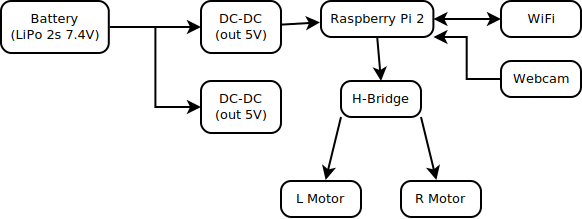

Introduction
Propósito
Diagrama de bloques
Lista de Materiales
Montaje de la placa
Puesta en marcha
Software
Published with GitBook
Diagrama de bloques
Diagrama de bloques
(No es un esquema de conexionado eléctrico, sino un diagrama de bloques del sistema)

results matching "
"
No results matching "
"